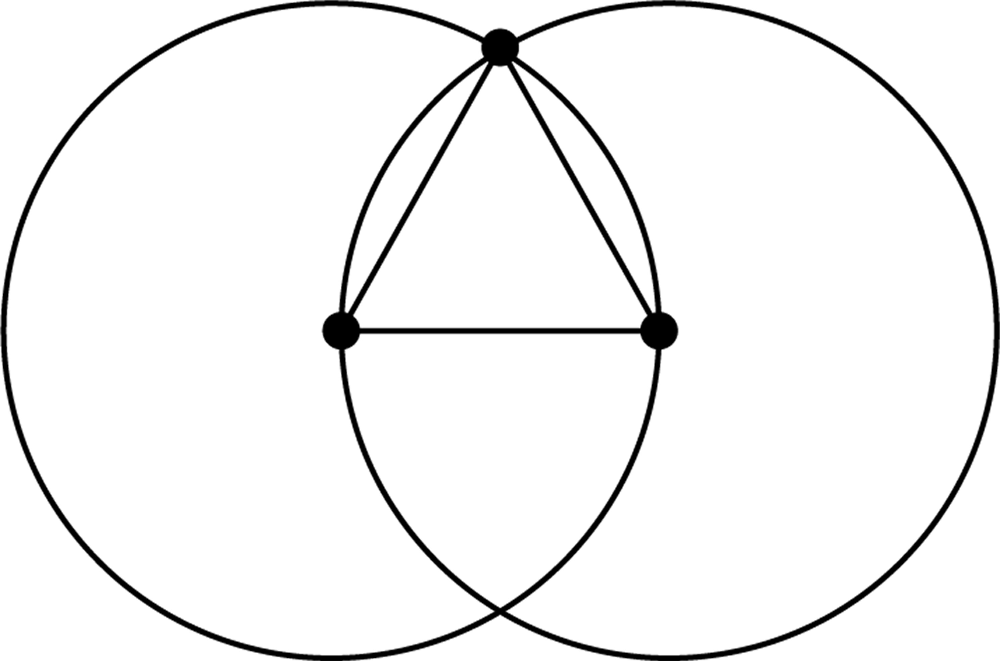

philosophy and spirituality
The Symbolism of the Number 3
The number three has consistently been recognized as significant throughout human history, often regarded as sacred, mystical, and universal in its symbolism. Across cultures and spiritual traditions, three represents a complete and balanced whole, embodying the essence of beginning, middle, and end, or birth, life, and death. This triadic structure encapsulates the entirety of existence, bringing harmony and stability by synthesizing dualities into a unified whole.
The symbolic power of three is embedded in philosophical systems. It is not merely a numerical abstraction but a representation of fundamental principles such as unity, diversity, and harmony. Philosophers and spiritual thinkers have regarded the number three as a bridge between opposing forces, facilitating a balance. This idea resonates in the synthesis of dualities, where contrasting concepts are reconciled into a harmonious unity.
The Number 3 in Philosophical Thought
One of the earliest systematic explorations of numerical symbolism can be attributed to the Pythagoreans, followers of the Greek philosopher Pythagoras. Pythagoras’s philosophy extended beyond numerical calculations, viewing numbers as the essence of reality and intertwining mathematics with ethics, metaphysics, and mysticism. For the Pythagoreans, the number three was revered as the first “complete” number, symbolizing the unity of plurality. It was seen as transcending duality, representing creativity, generative power, and the birth of new forms. [Fig. 3.1]
The triadic nature of three is also reflected in its depiction of the universe as comprising heaven, earth, and waters, [Fig. 3.2] and humanity as body, soul, and spirit. [Fig. 3.3] This tripartite structure forms the foundation of many philosophical systems that seek to explain existence as a fundamentally interconnected and balanced whole.
Philosophically, the number three embodies completeness, serving as a key to understanding the progression and resolution of all things. For example, Aristotle’s concept of the “Golden Mean” exemplifies a triadic balance between two extremes, advocating moderation and harmony in life. [Fig. 3.4] Similarly, the Hegelian dialectic—thesis, antithesis, and synthesis—mirrors the triadic principle, demonstrating the number three’s role in driving intellectual and spiritual progress. [Fig. 3.5]
Three in Spirituality
Spiritually, the number three is associated with growth, creativity, and guidance. It symbolizes the interconnectedness of mind, body, and spirit, representing holistic integration and unity with the divine. This symbolism is evident across belief systems and spiritual practices. In Christianity, the Holy Trinity (Father, Son, and Holy Spirit) exemplifies divine unity within diversity, a cornerstone of Christian theology. [Fig. 3.6] The number three signifies transformation and renewal, as seen in spiritual narratives such as Jesus’ resurrection on the third day, symbolizing triumph over death and the promise of new life.
In Hinduism, the Trimurti—Brahma (the Creator), Vishnu (the Preserver), and Shiva (the Destroyer)—symbolizes the cyclical nature of existence, encompassing creation, preservation, and transformation. [Fig. 3.7, 3.8] These deities represent principles rather than individual entities, highlighting the balance and progression inherent in the universe. Brahma embodies unity and the supreme truth, laying the foundation for creation and presiding over time and space. Vishnu bridges the spiritual and material realms, manifesting the material universe and sustaining the soul’s journey. Shiva governs transformation, ensuring creation, preservation, and destruction occur in balance. By recycling forms and enabling renewal, Shiva facilitates the soul’s evolution. Together, the Trimurti illustrates the interconnectedness of spiritual and material realms in maintaining harmony.
Moreover, the sacred syllable Aum, composed of three sounds, embodies the three states of consciousness—waking, dreaming, and deep sleep—as well as the transcendence of these states into unity. [Fig. 3.9] This triadic structure reinforces the universality of the number three in spiritual thought, symbolizing wholeness and the interconnectedness of all things.
Mythological Significance
of the Number 3
The significance of three extends into mythological narratives. Across cultures, the number three symbolizes harmony, wisdom, and understanding. In Greek mythology, the Fates—Clotho, Lachesis, and Atropos—govern the thread of human life, signifying its beginning, middle, and end. [Fig. 3.10] Similarly, in Norse mythology, the three Norns represent past, present, and future, weaving the fabric of destiny. [Fig. 3.11]
In literature and folklore, the “rule of three” is a storytelling principle that creates memorable and impactful narratives. Fairy tales like Goldilocks and the Three Bears and The Three Little Pigs use triadic structures to emphasize resolution, balance, and completeness. This narrative technique underscores the symbolic power of three as a number that resonates deeply with human cognition and emotions.
Universal Appeal of the Number 3
The universal appeal of the number three lies in its ability to encapsulate truths in a simple and elegant form. It serves as a bridge between opposites, fostering balance and unity. This triadic principle recurs in spiritual teachings, philosophical frameworks, and cultural expressions, reflecting the human need for order, harmony, and understanding. Whether seen as the integration of body, soul, and spirit; the cyclical nature of existence; or the resolution of dualities, the number three holds a unique place in human thought. Its symbolic resonance extends across time and cultures, affirming its role as a universal symbol of completeness and transcendence.
mathematics and science
The Number 3 in Algebraic Structures
In mathematics, the number three is foundational, especially in the study of algebraic structures. Group theory, a branch of mathematics focused on algebraic systems known as groups, offers a notable example of the importance of the number three. Cyclic groups of order 3, consisting of three elements, are among the simplest non-trivial groups. [Fig. 3.12] These groups exhibit periodicity and symmetry, properties that play a key role in understanding more complex groups.
Another significant area is field theory, where finite fields, or Galois fields, are studied. [Fig. 3.13] The finite field GF(3), containing exactly three elements, is essential in coding theory and cryptography. This field demonstrates unique arithmetic properties that enable efficient computations and secure data transmission, highlighting the number three’s importance in both practical and theoretical mathematics.
Furthermore, the symmetric group S₃, which represents all permutations of three elements, introduces the concept of non-abelian groups. [Fig. 3.14] Unlike abelian groups, where the order of operations does not matter, S₃ demonstrates complex interactions. This group is also integral to the study of polynomial equations and the symmetries of geometric objects.
In abstract algebra, the number three embodies principles of simplicity, symmetry, and structure, forming the building blocks for more advanced mathematical theories and applications.
The Number 3 in Geometry
The number three holds a revered place in geometry, symbolizing completeness, balance, and the foundation of shapes. The Pythagoreans, followers of the Greek philosopher Pythagoras, considered three to be the first true number, as it forms the first geometric figure—the triangle.
Triangles, with their three sides and three angles, are the simplest polygons and serve as the building blocks for more complex geometric shapes. [Fig. 3.15, 3.16] The Pythagorean theorem, one of the most fundamental principles in geometry, relates the lengths of a triangle’s sides in right-angled triangles, emphasizing the critical role of the number three in understanding geometric relationships and properties. [Fig. 3.17]
Additionally, the triangle symbolizes stability and harmony, often seen as a complete entity with a beginning, middle, and end.² This concept extends to the symbolic representation of the number three in the Triquetra or Trinity Knot, an ancient design featuring three interlocked arcs that form a continuous, symmetrical figure. [Fig. 3.18]
Even in arithmetic, the equation 1 + 2 = 3 exemplifies the foundational role of three in creating balance and completeness, principles that underpin geometric and mathematical reasoning. In summary, the number three is central to geometry, serving as the basis for shapes, laws, and the broader understanding of spatial relationships.
The Number 3 and
the Pythagorean Theorem
The Pythagorean theorem highlights the philosophical and mathematical significance of the number three. The theorem states that the square of the hypotenuse in a right triangle equals the sum of the squares of the other two sides. This relationship is often represented by the smallest Pythagorean triple, (3, 4, 5), where the number three plays a pivotal role. [Fig. 3.19]
The Pythagoreans extended their belief in numerical harmony to abstract notions, associating numbers with ideas and values. The number three, as the basis of the simplest Pythagorean triple, embodies harmony, balance, and interconnectedness of mathematical principles.
The Number 3 in Atomic Structures
In the realm of science, the number three is fundamental to the structure of atoms, the building blocks of matter. Atoms consist of three types of subatomic particles: protons, neutrons, and electrons. [Fig. 3.20] These particles determine the properties, identity, and stability of elements.
Protons, located in the nucleus, carry a positive charge and define an element’s atomic number. Neutrons, also in the nucleus, have no charge but contribute to atomic mass and stability. Electrons, negatively charged, orbit the nucleus and influence an element’s chemical behavior and reactivity.
The triad of protons, neutrons, and electrons creates the stability necessary for the existence of elements. This balance is evident in the concept of “magic numbers,” numbers of protons or neutrons that confer stability to nuclei. Noble gases, for instance, achieve stability through filled electron shells, which reflect the tripartite structure of subatomic particles.
Even the instability of isolated neutrons, which decay within minutes, is counterbalanced by the binding energy within the nucleus. This interaction ensures the stability of elements such as carbon and oxygen, which are critical to life and the composition of matter. Thus, the number three is central to atomic structures, underscoring the interplay of subatomic particles and the stability of all matter.
The Number 3 and the Periodic Table
The periodic table, a cornerstone of chemistry, reflects the significance of the number three through the triad of subatomic particles: protons, neutrons, and electrons. Protons, located in the nucleus, determine an element’s atomic number and position on the table. Neutrons influence isotopic variations, while electrons, particularly those in the outermost shell, govern chemical reactivity and bonding behavior. [Fig. 3.21]
This triad of fundamental particles underpins key periodic trends such as electronegativity, ionization energy, and atomic radius. [Fig. 3.22] For instance, electronegativity depends on the number of protons (nuclear charge) and electron shielding, while ionization energy reflects the strength of an atom’s hold on its electrons. Atomic radius is strongly influenced by the number of electron shells and nuclear attraction.
Furthermore, the balance between protons and electrons determines an atom’s charge, affecting its ability to form ions. Anions, negatively charged ions, arise from excess electrons, while cations, positively charged ions, result from a deficiency of electrons. By organizing elements based on their atomic structure—protons, neutrons, and electrons—the periodic table reflects the fundamental role of this triad in categorizing elements and understanding their chemical behavior and interactions.
Cultural Symbolism
The number three holds a prominent place in cultures worldwide, symbolizing harmony, balance, and completeness. Often regarded as a sacred number, it reflects universal truths about existence and unity through its association with balance, creativity, and interconnectedness. Across various cultural traditions, the number three has become a cornerstone in narratives, symbolism, and practices, shaping the way societies interpret the world around them.
Cultural Symbolism
in Different Traditions
In Chinese culture, the number three is deeply tied to principles of balance and vitality. The Taoist concept san sheng wan wu (“three begets all things”) reflects the generative power of three in fostering balance and diversity throughout the universe. This idea harmonizes with the interaction of yin and yang, where the blending of opposites gives rise to a transformative and harmonious third force.
The significance of three is further emphasized in Taoist cosmology through The Three Pure Ones (Sanqing), the highest deities in the Taoist pantheon. [Fig. 3.23] These deities—Yuanshi Tianzun (The Celestial Venerable of the Primordial Beginning), Lingbao Tianzun (The Celestial Venerable of the Numinous Treasure), and Daode Tianzun (The Celestial Venerable of the Way and Its Virtue)—represent the fundamental Taoist principles of creation, order, and spiritual guidance. Together, they embody the unity, harmony, and balance essential for maintaining cosmic order and serve as revered archetypes of wisdom, virtue, and enlightenment.
The number three is closely associated with auspiciousness and good fortune. Phrases such as “three joys arriving at once” and “things do not happen more than three times” signify prosperity, success, and the resolution of challenges. It is especially common to use the number three in ceremonies, architecture, and artistic expressions to invoke completeness.
Additionally, the number three plays a significant role in Chinese storytelling, where triadic structures create a rhythmic and satisfying conclusion to narratives. Protagonists often face three challenges or trials, each building on the last, culminating in a final resolution that reflects growth or triumph. This technique aligns with the cultural belief in three as a symbol of completeness and harmony, emphasizing moral lessons and the resolution of conflict through perseverance and transformation.
In ancient Greek culture, the number three is a symbol of harmony and order, appearing prominently in mythology and societal practices. The triadic division of power among Zeus, Poseidon, and Hades, who rule the sky, sea, and underworld, emphasizes balance within the cosmos. [Fig. 3.24] Similarly, the concept of the three Fates—Clotho, Lachesis, and Atropos—illustrates the interconnectedness of human destiny, with each Fate responsible for a specific stage of life.
Greek storytelling incorporates the number three as a structural and symbolic device. The three Graces (beauty, charm, creativity) and the motif of three trials or challenges in myths reinforce the cultural resonance of the number as a symbol of completeness and resolution. [Fig. 3.25]
The number three held sacred meaning in ancient Egyptian culture, often symbolizing stability, harmony, and the cyclical nature of existence. Triads of gods, such as Osiris, Isis, and Horus, represent essential aspects of life, death, and rebirth, reflecting continuity and regeneration. [Fig. 3.26] This triadic structure appears in aspects of Egyptian art and architecture.
The pyramids of Giza, a trio of monumental structures, exemplify the power of three in creating harmony and order. [Fig. 3.27] Their triangular shapes symbolize strength, balance, and unity, connecting heavens, earth, and the underworld in a representation of cosmic stability.
In Celtic traditions, the number three is a symbol of interconnectedness and balance. The triskele, a triple spiral motif, represents life’s cycles—birth, death, and rebirth—and the unity of past, present, and future. [Fig. 3.28] This symbol is tied to the natural world and spiritual beliefs, reflecting the Celts’ reverence for the interconnectedness of all things.
Triads frequently appear in Celtic folklore and proverbs, emphasizing the importance of balance and harmony. The cultural use of the number three often reflects the belief in a harmonious relationship between the physical, mental, and spiritual realms.
Many Native American cultures regard the number three as a symbol of harmony between the sky, earth, and underworld. This triadic structure reflects a deep connection to the natural world and its cycles. The use of the number three in rituals, art, and storytelling emphasizes balance and interconnectedness of existence. [Fig. 3.29]
In Native American storytelling, triadic patterns often highlight spiritual journeys or moral lessons, with three challenges or tasks serving as key elements in the narrative structure. This reinforces the belief in the transformative power of three as a path to wisdom.
The Number Three in
Storytelling and Folklore
The number three plays a significant role in cultural narratives and folklore, often symbolizing resolution and transformation. Across cultures, stories frequently feature three trials, three wishes, or three siblings, reflecting a universal appreciation for the completeness of this number.
The recurring presence of three in storytelling provides a sense of rhythm and closure, resonating deeply with audiences. For example, the phrase “third time’s the charm” reflects the belief in the transformative power of three as a catalyst for success. This symbolic resonance extends to narrative structures, most notably the three-act structure, a framework that has become foundational in storytelling across cultures.
The three-act structure divides a narrative into three essential parts: the setup, which introduces the characters, setting, and initial conflict; the confrontation, where obstacles and challenges intensify; and the resolution, which brings closure as conflicts are resolved. [Fig. 3.30] This structure embodies the symbolic completeness of the number three, offering a cohesive framework that engages audiences and enhances narrative coherence.
In Chinese folklore, stories with three challenges or acts often emphasize the moral and spiritual growth of the protagonist. Similarly, in Western fairy tales, three is a common narrative device, creating a satisfying arc that reinforces the symbolic power of balance and resolution. For instance, in tales such as Goldilocks and the Three Bears or The Three Little Pigs, the protagonist’s journey through three distinct phases underscores themes of learning, persistence, and transformation.
Cultural Applications of
the Number Three
The symbolism of three extends beyond narratives into practical applications within cultures. In traditional art, design, and architecture, the use of three is common to evoke harmony and balance. For example, grouping three objects, patterns, or elements is widely regarded as aesthetically pleasing and symbolically powerful across various cultural traditions. [Fig. 3.31]
The rule of thirds, a principle rooted in visual composition, exemplifies the influence of the number three in design. [Fig. 3.32] By dividing a composition into three equal parts horizontally and vertically, this rule creates nine sections, guiding the placement of key elements along the intersecting lines. This approach enhances balance, visual interest, and harmony in art, photography, and other creative mediums. The rule of thirds mirrors the broader cultural and symbolic significance of three by emphasizing equilibrium and unity within a structured framework.
In festivals and rituals, the number three often signifies completeness and auspiciousness. Triadic structures in ceremonies—such as offerings, prayers, or symbolic acts performed in sets of three—underscore the importance of this number in fostering a sense of order and harmony. Whether in visual composition, cultural practices, or traditions, the number three continues to serve as a timeless symbol of balance, wholeness, and interconnectedness.
astrology and tarot
Jupiter’s Influence on
the Number 3 in Astrology
In astrology, the number 3 resonates with the expansive energy of Jupiter, the “Great Benefic,” known for promoting growth, abundance, and wisdom. [Fig. 3.33] Jupiter rules Sagittarius and is exalted in Cancer, enhancing qualities such as optimism, courage, and creative expression that are linked to the number 3. [Fig. 3.34, 3.35] Individuals born on the 3rd, 12th, 21st, or 30th of any month often exhibit creativity, dynamic energy, and communication skills. These traits reflect Jupiter’s influence, which fosters ambition and the ability to manifest ideas.
Life Path Number 3 individuals are natural communicators and creative thinkers, often displaying generosity, sociability, and philosophical insights. For Sagittarius and Pisces, both influenced by Jupiter, the number 3 amplifies the pursuit of higher knowledge, travel, and spiritual exploration. [Fig. 3.36] This alignment fuels ambitious dreams and achievable goals, making Jupiter a key factor in the number 3’s association with vision and success.
Across spiritual traditions, the number 3 embodies creativity, self-expression, and spiritual growth. It frequently appears in mythology, religious texts, and nature, symbolizing balance, harmony, and completion through the connection of mind, body, and spirit. In numerology, the number 3 is associated with joy, optimism, and artistic expression. Its influence encourages individuals to embrace their creative potential and pursue endeavors that ignite their passions. Governed by Jupiter, the number 3’s expansive energy inspires ambition, wisdom, and effective communication.
The Empress Card and
the Number 3 in Tarot
In tarot, The Empress is card number 3 (III) in the Major Arcana [Fig. 3.37]. This card symbolizes fertility, creativity, and abundance, reflecting the archetypal feminine energy it represents. Governed by Venus, The Empress embodies love, beauty, and sensuality, serving as a guiding force that encourages individuals to embrace their creative potential and foster connections with nature and instincts.
In a reading, The Empress signifies growth and creation, whether through the birth of a child, the initiation of a project, or the blossoming of relationships. Its imagery, often featuring symbols like pomegranates and a crown of twelve stars, underscores themes of fertility, life cycles, and nurturing ideas. These symbols highlight the interconnectedness of creativity, sustenance, and the world.
The number 3, associated with growth, expansion, and manifestation, forms the foundation of The Empress’s thematic significance. It inspires individuals to cultivate their creative instincts, pursue harmonious endeavors, and nurture projects or relationships that bring balance, fulfillment, and into their lives.
The Number 3 in Tarot Spreads
In tarot spreads, the number 3 symbolizes the integration of diverse elements to create new realities. It represents manifestation, stabilization, and the materialization of decisions, reflecting growth and expansion. The Three of Swords signifies heartache and lessons from emotional challenges, illustrating the number 3’s transformative power. [Fig. 3.38] The Three of Pentacles emphasizes teamwork, collaboration, and craftsmanship, highlighting unity and [Fig. 3.39] The Three of Wands reflects success, foresight, and rewards from well-planned actions, [Fig. 3.40] while The Three of Cups celebrates joy, friendship, and community, embodying emotional connection and happiness. [Fig. 3.41]
In the Major Arcana, The Empress (III) encapsulates the nurturing and creative energy of the number 3. It symbolizes fertility, abundance, and harmony, encouraging the cultivation of ideas and the growth of material and emotional realms.
Tarot spreads involving the number 3 highlight opportunities for collaboration, communication, and transformation. The presence of 3 in readings signifies moments of synthesis and balance, where elements come together to form a greater whole. This energy underscores the number’s role in growth, self-discovery, and the realization of potential.
[Fig. 3.1]
The triad, symbolized by the equilateral triangle, represents the firstborn number, embodying balance, stability, and strength. Emerging from the vesica piscis, it uniquely equals both the sum and product of its predecessors (e.g., 1 + 2 = 3 and 1 × 2 × 3 = 6).
3
